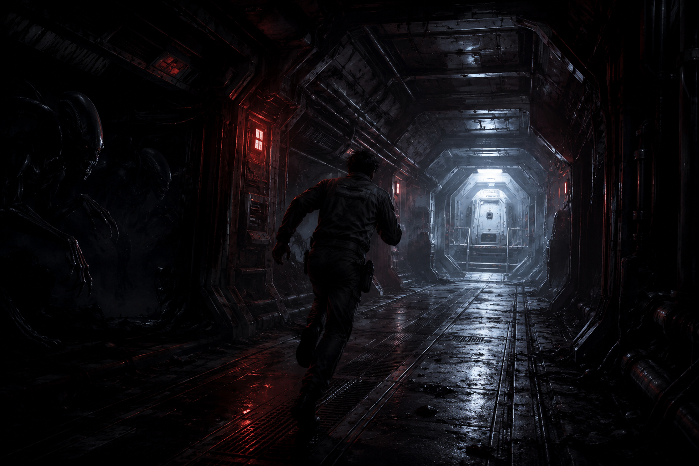

Mes jeux
- Vous êtes ici : Reticuli
- Accessible Arena Strike (à venir)

Site en construction : cette page sera enrichie progressivement.
Présentation du jeu
Reticuli est un jeu vidéo sonore en temps réel, jouable au clavier, avec une ambiance de science-fiction horrifique.
Le projet met l’accent sur les sons, la stéréo, les annonces vocales et une interface graphique synthétique, afin de proposer une expérience accessible aussi bien aux joueurs voyants que non-voyants.
Lien itch.io
Chronologie
- Vendredi 5 juin 2026 à 22h47 : fin du projet Reticuli.